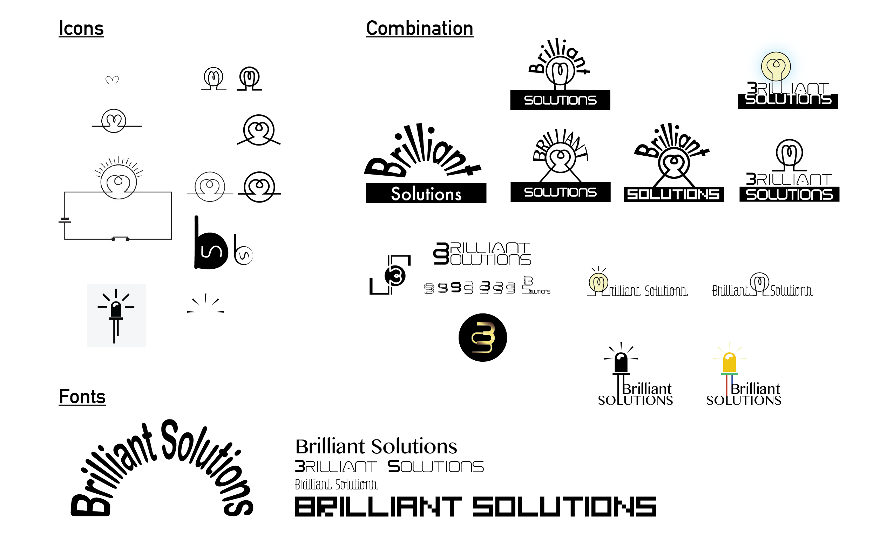

The project is a branding redesign for a client’s start-up company "Brilliant Signs & Ceiling Solutions", which deals with decorating signs and ceiling. The collection of visual design includes logo, business card, and website.
I began by brainstorming a list of possible symbols or icons that could be used. However, it was not easy to visualize the logo, as "signs and ceilings" were difficult to represent by an icon or a symbol. On the other hand, the clients didn't want to use the initials of their company as a logo because it might cause ambiguity. Thus, designing the logo with the company's initials won not be a solution.

Figure 1 | Sketches of icons and fonts combination
Therefore, I took a look at the company's products and the services. The company mainly focused on making light boxes made by LED lights and ceilings made of stretchable vinyl materials. Then I found a common component among these products — the use of LED lights. I immediately thought of using the symbol of a LED light/light bulb in the logo design, which, occasionally, matches their brand name "brilliant" as well. Henceforth, I looked up some LED light images on the Internet, compared and modified them using Adobe Illustrator. I drew several sketches, selected four types of font, and tried out different combinations of the layout for testing (figure 1). Nevertheless, I chose a calligraphy font for the text so that the tails of each letter looked like wires, as if the light bulb was connected to a circuit. After showing the above collection of sketches (figure 1) to the clients, they chose the ideal one (figure 3 below) for their brand.
Figure 2 | Old logo of the company
Figure 3 | New logo I designed
The original design of their company logo is like this (figure 2), which they are not satisfied with because they thought it was too simple and it couldn't represent their company/products well in a creative way. I solved the problem by communicating well with the client and asked for opinions as I designed the logo. The iterative process went several times to keep the client up-to-date and received their instant feedback.
Figure 4 | Business card
Figure 5 | Website
The client was satisfied with my design and the logo was put into use on their business card (figure 4), website (figure 5), and invoice. I continued to apply the theme of light bulb across all their branding products. After finishing this logo design, I learned more about how to communicate with the clients, and where to draw my inspiration from during the ideation process. Furthermore, I was able to take away the skill of manipulating Illustrator and designing layouts with balanced composition.